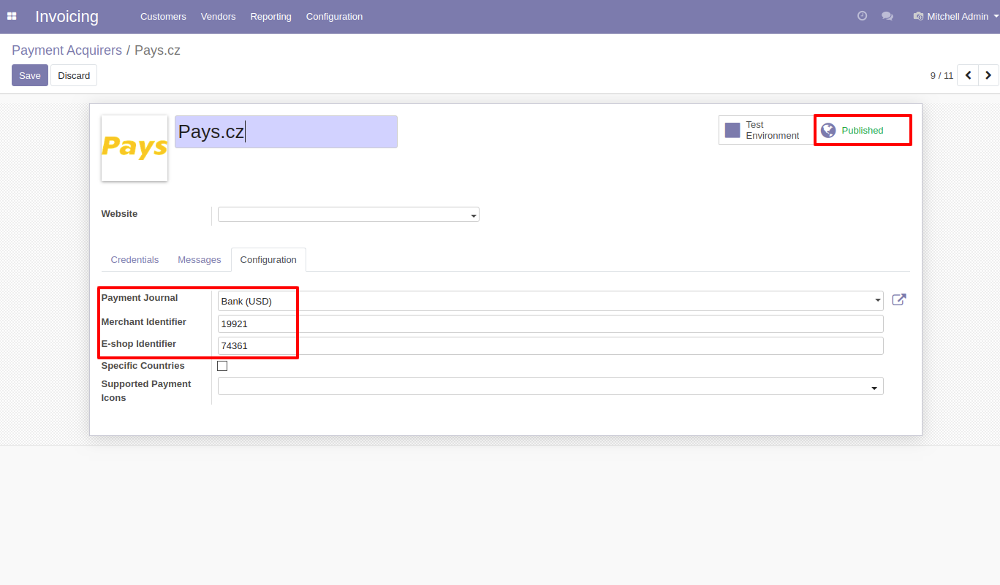
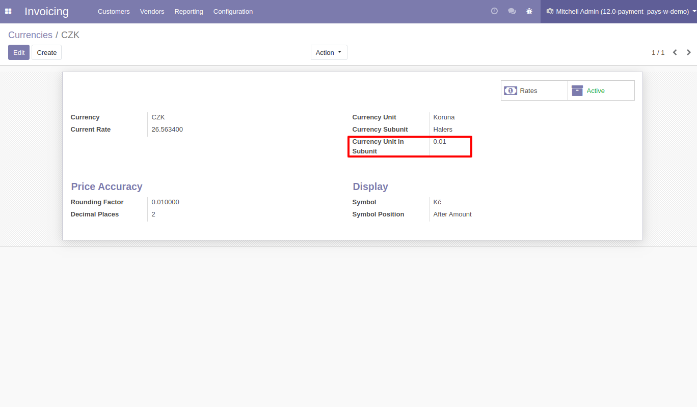
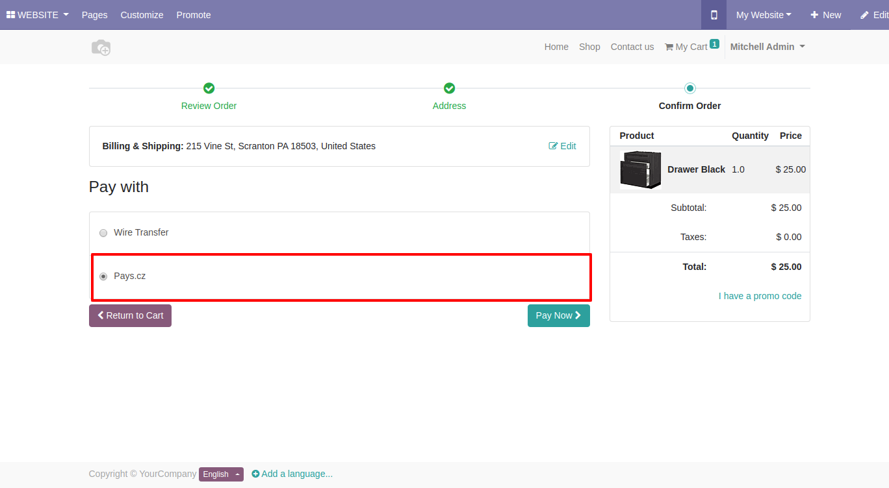

<section class="oe_container">
    <div class="oe_row oe_spaced">
        <h2>Pays.cz</h2>
        <ol>
            <li>Install <b>Pays Payment Gateway</b> module and publish the pays payment acquirer from Invoicing >> Configuration >> Payments >> Payment Acquirers. Configure payment journal, merchant identifier, and eshop identifier.</li>
            <div class="oe_demo oe_picture oe_screenshot">
                
            </div>
            <li>Pays.cz accepts amount converted in currency subunit. So a new configuration is added on currency card. It is currency unit in subunit, that is, 1 Haler = 0.01 Koruna.</li>
            <div class="oe_demo oe_picture oe_screenshot">
                
            </div>
            <li>Select <b>Pays.cz</b> when proceeding for payments on eshop.</li>
            <div class="oe_demo oe_picture oe_screenshot">
                
            </div>
        </ol>
    </div>
</section>
